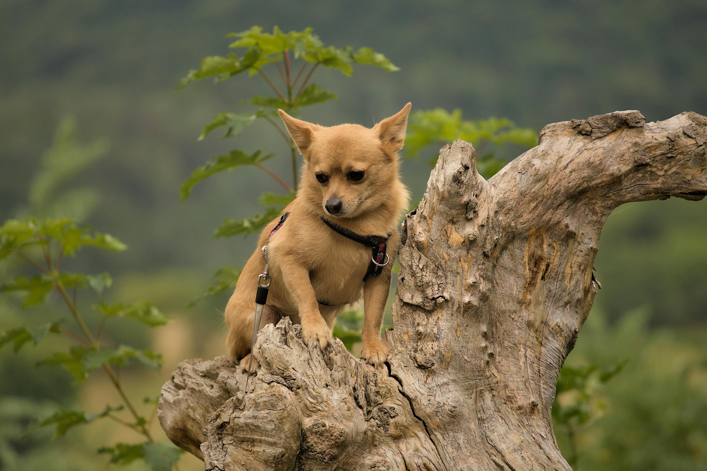
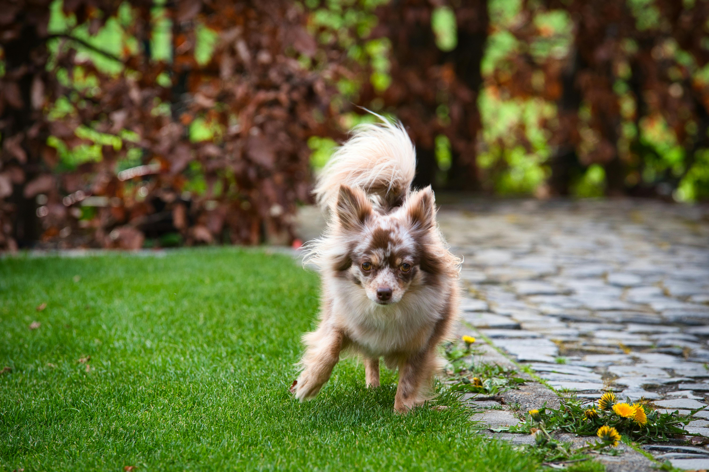
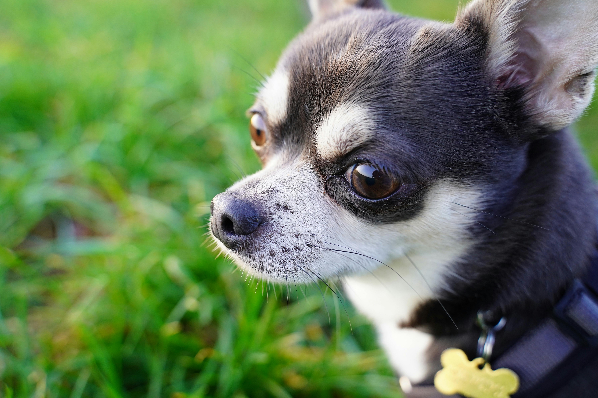
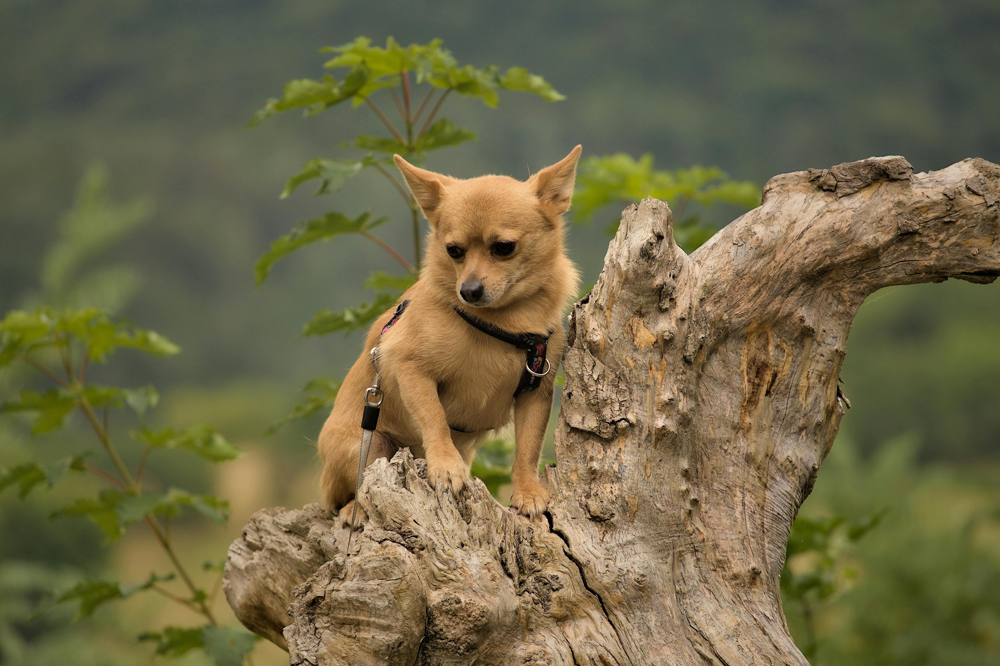
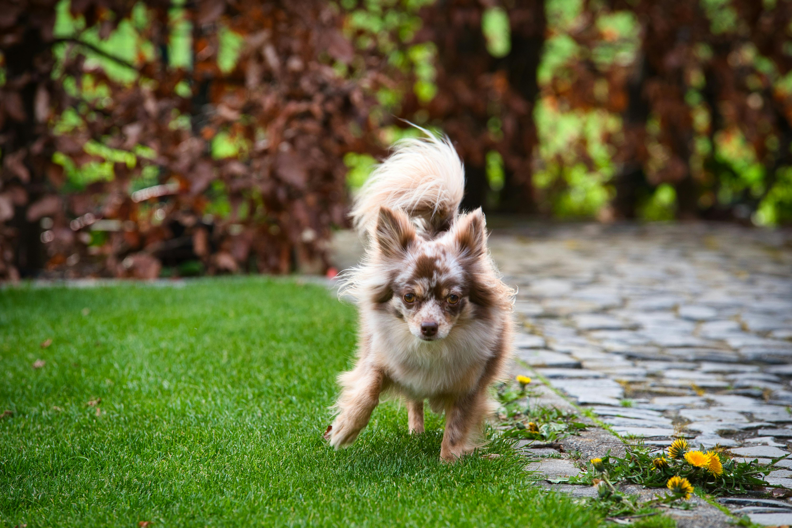

Chihuahua Lovers
Alexas Fotos:Brown Dog on Green Grass by Pexels
Anton Atanasov:Chihuahua on Tree Trunk by Pexels
Bigworldinalens:Dog Running on Lawn by Pexels

Franzi:Chihuahua in Close Up by Pexels
Alexas Fotos:Brown Dog on Green Grass by Pexels
Anton Atanasov:Chihuahua on Tree Trunk by Pexels
Bigworldinalens:Dog Running on Lawn by Pexels
Franzi:Chihuahua in Close Up by Pexels